はじめて触る方向けに、動画を 1 本仕上げるまでの流れをひととおり説明します。
準備するものはブラウザだけです。 動画はどこにもアップロードされません。読み込みも書き出しも、すべてお使いのパソコンの中で行われます。
Chrome または Edge をお使いください（Safari と Firefox は動画の書き出しに必要な機能が未対応です）。
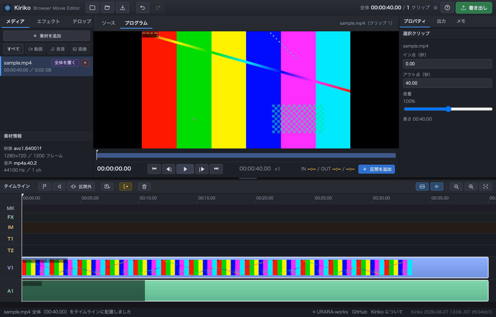
タイムライン左端の MK FX といった見出しは、それぞれ次の行です （画面上でも、見出しにカーソルを合わせると説明が出ます）。
| MK | マーカー。目印や覚え書き |
|---|---|
| FX | エフェクト（ぼかし） |
| IM | 差し込んだ画像 |
| T1 / T2 | テロップ。重ねたい時は別の行に置きます |
| ST | 字幕。SRT で書き出す（画面には焼き込まれません） |
| V1 | 映像。カットしたクリップが並びます |
| A1 | 元の音。動画にもともと入っている音（クリップと一緒に動きます） |
| A2 / A3 | 追加した効果音・BGM |
| 左パネル | 読み込んだ動画・音源・画像が並びます。エフェクトとテロップのタブもここです |
|---|---|
| まん中 | 再生画面。ソースは読み込んだ動画そのもの、プログラムは編集後の仕上がり、 サムネはYouTube 用のサムネイルを作る場所です |
| 右パネル | 選んだものの設定。書き出し設定と作業メモもここに入っています |
| タイムライン | 下半分。動画を並べて、テロップや音を重ねる場所です |
タイムラインは上から MK（メモ）・FX（ぼかし）・IM（画像）・T1 T2（テロップ）・ ST（字幕）・V1（映像）・A1（元の音）・A2 A3（効果音や BGM）の順に並んでいます。 上と下の境目をドラッグすると高さを変えられます。
Kiriko を開くと、まずこの画面が出ます。 編集する動画が入っているフォルダを開いてください。
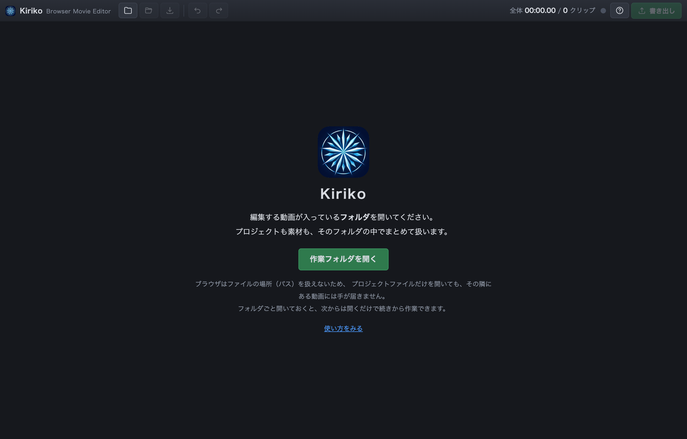
フォルダを開いておくと、こうなります。
ブラウザには「ファイルの場所（パス）」という考え方がありません。 プロジェクトファイルだけを開いても、ブラウザはその隣にある動画に手が届きません。 フォルダごと開いてもらうのは、そのためです。
左パネルの 素材を追加 ボタンからでも選べます（動画・音源・画像の区別は拡張子で判別します）。ここではまだ何も編集されません。 読み込んだ素材が左側に並ぶだけです。
1.5 時間・14GB といった長い動画でも大丈夫です。 Kiriko は動画をまるごとメモリに読み込まず、必要な所だけを読みにいく作りになっています。
素材の行にある 全体を置く を押すと、その動画がまるごとタイムラインに乗ります。 ここから、いらない所を切っていきます。
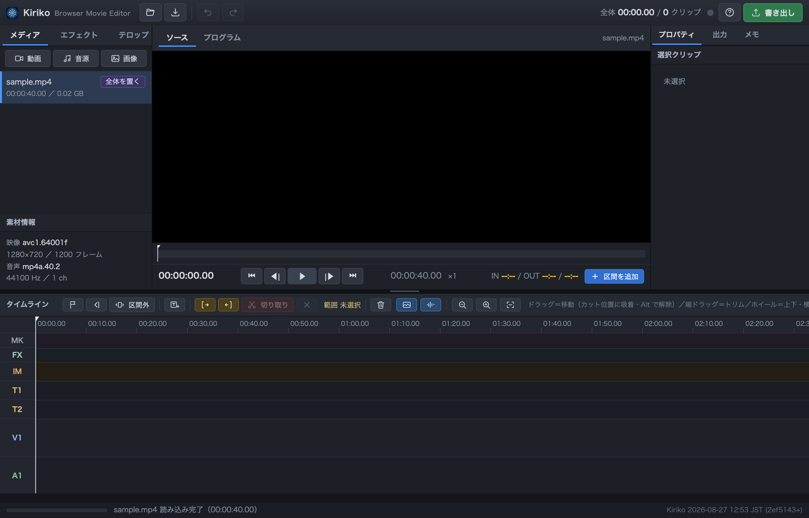
読み込んだ素材は、行の右にある × でプロジェクトから外せます。 タイムラインで使っている場合は、いくつ消えるかを確認してから外します （⌘Z で戻せます）。
タイムラインに乗せると、映像に サムネイル、音に 波形 が表示されます。 波形の平らな所は音が鳴っていない所なので、切る場所を探す目印になります。
Kiriko のカットは 「消したい範囲を選んで消す」 という進めかたです。 キーボードだけで完結するので、慣れると速く進みます。
ここが範囲の開始になります。まだ範囲の長さは 0 です。
← → で 1 コマずつ、Shift を足すと 1 秒ずつ動きます。 Space で再生しながら探しても構いません。
選んだ範囲が消えて、後ろが自動的に詰まります。 カーソルは切った場所に残るので、そのまま次の範囲を選べます。
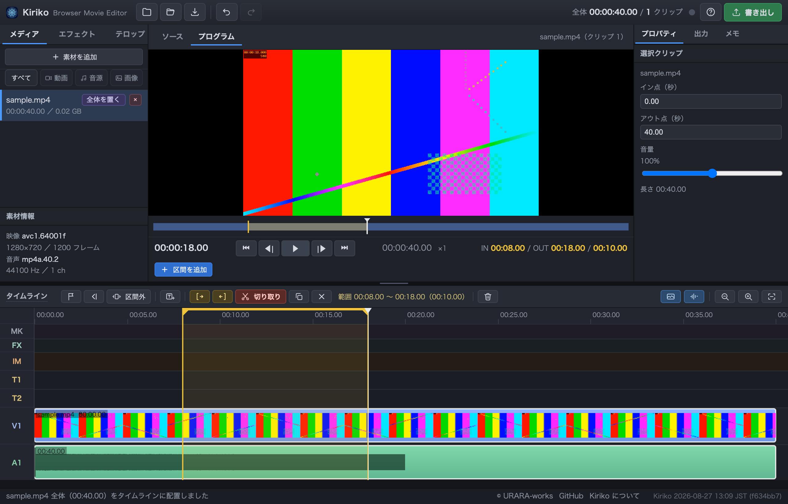
間違えても ⌘Z（Windows は Ctrl+Z）で戻せます。 何段でも戻せるので、思い切って進めて大丈夫です。
カットで消した分は捨てていません。 語尾が切れた、話し始めが欠けた、という時は、その場で少しだけ返せます。
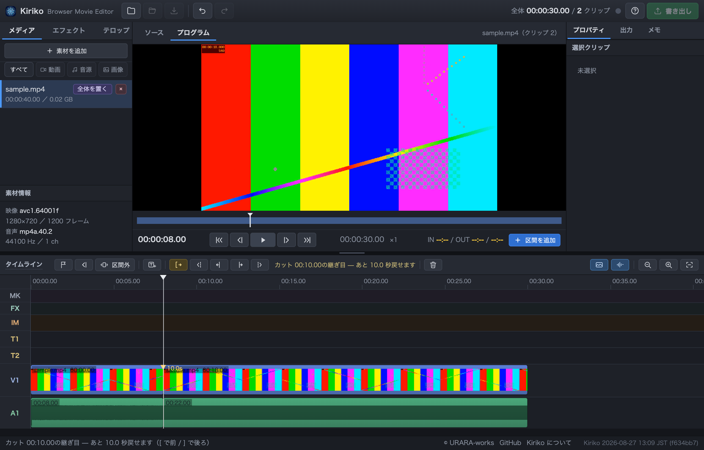
カットした場所を順に送ります。タイムラインの印をたよりに探しても構いません。
語尾が切れていたら [、話し始めが切れていたら ]。 聞きながら足りない方に足していきます。押すたびに 0.5 秒ずつ戻ります。
同じ場所で行ったり来たりできます。タイムライン上のボタンからも操作できます。
⌘Z との違い。 ⌘Z は「直前の操作をまるごと取り消す」ものなので、 カットの後に別の作業をしてしまうと、そのカットだけを戻すことはできません。 こちらはいつでも、その箇所だけを、秒単位で返せます。
そのため、迷ったら少し多めに切ってしまって構いません。 後から聞き直して、足りない所だけ返す方が速く進みます。
長い素材から短い場面をたくさん集めたい時は、逆のやり方もできます。 再生画面の ソース タブに切り替えて I O で範囲を決め、 Enter を押すとその区間だけがタイムラインの最後に足されます。 アウト点がそのまま次のイン点になるので、続けて拾っていけます。
テロップが追加され、編集画面が開きます。文字を打つとすぐ反映されます。
再生画面に出ている枠をドラッグすると動きます。四隅をつまむと大きさが変わります。 画面の端や中央では自動で吸い付きます（Alt を押している間は吸着しません）。
同じ時刻に出ている他のテロップや画像とも端が揃うように吸い付きます。 左右の端・上下の端・中心のほか、相手のすぐ隣に並べる位置にも止まるので、 縦や横をきれいに揃えたい時に使えます。吸い付いた所には目印の線が出ます。
枠の中での寄せかた（左・中央・右／上・中央・下）も選べます。
再生画面の何も無い所を押すと選択が外れます。枠とハンドルが消えるので、 仕上がりをそのまま確かめられます（テロップ自体は消えません）。
タイムラインの T1 にできた帯を左右にドラッグすると位置、端をドラッグすると長さが変わります。 カットの切れ目に吸い付くので、場面が切り替わる瞬間に合わせやすくなっています。
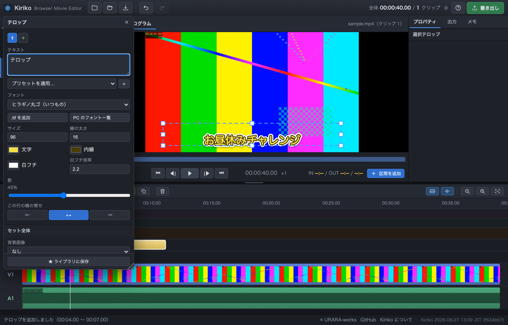
字間（文字と文字の間）と 行間（行と行の間）は、編集画面の 「サイズ」「縁の太さ」と同じ並びにあります。字間はマイナスにすると詰まるので、 長いセリフを 1 行に収めたい時に使えます。字間は行ごとの設定です。
B（太字）I（斜体）U（下線）S（取り消し線）は 組み合わせられます。どれか 1 つだけ、という制限はありません。
文字の位置も「文字の位置を自由に決める」で、枠の左上からずらせます （寄せの指定はそのまま効きます）。
色は 基本色の見本から選べます（細かく決めたい時は左の四角を押すと 色の選択画面が開きます）。内縁はチェックで外せます。白フチは倍率を 0 にすると消えます。 背景色にチェックを入れると、枠の中を好きな色で塗れます（背景画像と重ねられます）。
文字をグラデーションにするにチェックを入れると、文字を 2 色で塗り分けられます。 縦なら上から下へ、横なら左から右へ変わります（行ごとの設定です）。
フォントは押すと一覧が開き、名前がその書体のまま並ぶので、 見た目で選べます。日本語名を持つフォントは日本語で表示します （下に英語名も出るので、探す時はどちらでも絞り込めます）。 一覧の下の PC のフォント一覧を読み込む と .ttf を追加 で、 手持ちのフォントを一覧に加えられます。
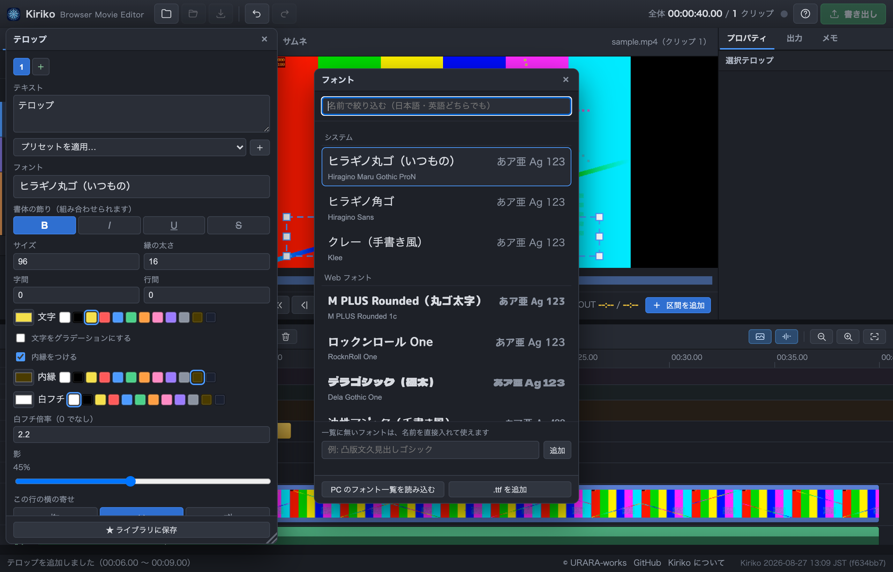
それでも出てこないフォントは、名前を直接入れて使えます （macOS があとからダウンロードするフォントなど、一覧に載らないのに使えるものがあります）。 入れた名前が本当に使えるかはその場で確かめて、使えない時は教えてくれます。
テロップは「行の集まり」として作れます。＋ で行を足すと、 行ごとに文字の大きさ・色・書体を変えられます。見出しと日付を組みにする、といった作りかたです。
背景画像とアイコン画像は、位置を自由に決める にチェックを入れると 好きな場所に置けます。位置はテロップの枠の左上からの距離（右へ／下へ）で指定するので、 枠ごと動かせば画像も一緒に動きます。背景画像は幅と高さも指定できます（0 なら元の大きさ）。
さらに 背景画像（帯やフレーム）と アイコン画像（ロゴなど）も一緒に持てます。 画像の余白は自動で切り詰めるので、大きな透明画像の中にロゴが小さく置いてあっても、 ちょうどよい大きさで表示されます。
よく使う組み合わせは ★ ライブラリに保存 しておくと、 次に別の動画を編集する時もそのまま呼び出せます。画像も一緒に保存されます。
ライブラリはこのブラウザの中に貯まります。別のパソコンへ移したい時は、 左パネルの テロップ タブから 書き出し・読み込み ができます。
一覧の項目は 掴んで上下に動かすと並べ替えられます。よく使うものを上に集めておけます。 ✎ で名前を変えられます。中身を直したい時は、ライブラリから一度置いて直したうえで もう一度 ★ ライブラリに保存 を押すと、元のセットに上書きするか聞かれます。
文字や画像の位置は、プレビュー上でも動かせます。 ⌘（Windows は Ctrl）を押しながらドラッグすると、 枠は動かさずに中身だけを動かせます。 素のドラッグは今までどおり枠ごとの移動です。
動かせるのは掴んだものだけです（文字・背景画像・アイコン）。 背景色だけの所を掴んでも何も動きません。 動かしている間は枠の端と中央に吸着します（Alt で解除）。 枠の外へ出すこともできます。
字幕は動画に焼き込みません。 かわりに SRT ファイル（字幕専用のテキストファイル） として書き出し、YouTube にアップロードするときに一緒に添付します。 焼き込みだと 1 つの言語に固定されて英語字幕を別に用意できず、視聴者が消すこともできず、 直すたびに動画を書き出し直すことになります。SRT なら日本語・英語の 2 本を用意して 視聴者に選んでもらえますし、直したいときはテキストを差し替えるだけで済みます。
ただし YouTube 以外（X や Instagram など）にそのまま転載すると、この字幕は付いてきません。
テロップとは別のものです。 テロップは見せ場を飾る演出、 字幕はセリフ全体を文字にした日英 2 言語のデータで、役割が違います。
タイムラインの ST 行に字幕が追加され、右パネルの「プロパティ」に 日本語・English の入力欄が開きます。
文字数が目安（日本語 1 行 16 文字・英語 1 行 42 文字、どちらも 2 行まで）を超えたり、 表示時間に対して読む速さが速すぎたりすると、タイムラインの帯が赤くなり、 入力欄にも何が超えているか出ます。
そのまま全部訳す必要はありません。 収まらない時は短く言い直すのが正解です。 特に英語は日本語より文字数を使うので、そのまま直訳すると簡単にはみ出します。
タイムラインの ST の帯をドラッグすると位置、端をドラッグすると長さが変わります （隣の字幕とは重ねられません。最短 0.3 秒）。
「プロパティ」の 再生位置で分割 で 1 つを 2 つに割ったり、 前の字幕と結合 で隣とつなげたりもできます。
プレビュー下の字幕表示は ON/OFF と 日本語 / English / 日英とも を 切り替えられます（見え方の確認用の設定なので、プロジェクトファイルには保存されません）。
YouTube の字幕は視聴者側の設定で大きさが変わるため、実際の見た目はこちらで決められません。 そのかわり出る位置（画面下部の中央）は決まっているので、プレビューに帯でガイドを 出せます。テロップを字幕と同じ場所に置くと、この帯が赤くなって重なりを教えてくれます。
右パネルの「出力」タブから .ja.srt / .en.srt を保存します。 テキストが入っていない言語の行は、書き出し時に自動で除かれます。
生成 AI に任せることもできます。 セリフの書き起こしから下書きの字幕作り、 英訳の流し込みまで、MCP 接続した生成 AI に任せられます（7. マーカーで下ごしらえ と同じ仕組みです）。繋ぎ方は、お使いの生成 AI に 手順書 を示して「この通りに繋いで」と頼むのがいちばん早いです。
同じものを繰り返し使う時はコピーが早いです。 テロップや効果音を選んで ⌘C、置きたい所へ再生位置を移して ⌘V。 書式も長さも音量もそのまま複製されるので、 「1 件目 配達完了」を貼り付けて数字だけ直す、という使い方ができます （右クリックメニューからも選べます）。
ボタンからも操作できます。範囲を選ぶと 切り取り と コピー が、コピーすると 貼り付け が タイムラインの上に出てきます（使えない間は出しません）。
テロップと効果音を組にして持っていくこともできます。 I O でその辺りを範囲選択してから ⌘C すると、 範囲に掛かっているテロップ・効果音・画像・ぼかしがまとめて入ります。 貼り付けると、いちばん早いものが再生位置に来て、 残りは元と同じ間隔で並びます。
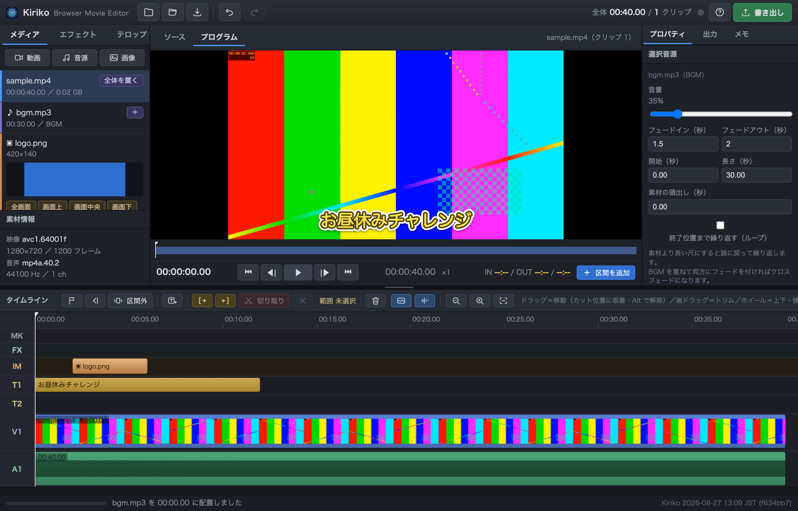
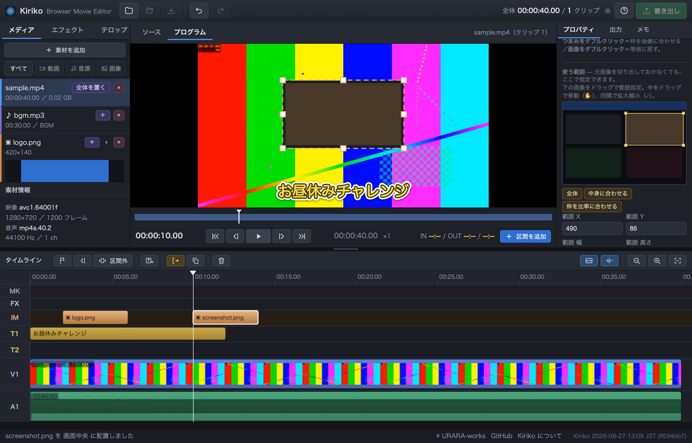
ドロップして読み込み、一覧をクリックすると再生位置に置かれます（大きさは自動）。 全画面 / 中央 / 画面下 などから選びたい時は ▸ を押します。 枠のドラッグで位置と大きさを調整できます。
元画像を切り出しておく必要はありません。 プロパティの 使う範囲 で、画像の一部だけを指定して置けます。 スクリーンショットの一部だけを見せたい、という時に画像編集ソフトを開かずに済みます。 同じ素材から別の範囲を何度でも取れますし、後から取り直せます。
mp3 を読み込んで、一覧のクリック（または ＋）で配置します。 BGM は音量やフェードの初期値が自動で入ります。 重ねたい時は別のトラック（A3、A4…）に置けます。
エフェクトタブから追加します。全画面と部分（顔など）を選べます。 部分ぼかしは楕円で、縁が自然に馴染みます。
動く人にも付いていけます。プロパティの 追従（キーフレーム） で、 要所の位置を打つと間は自動で補間されます。歩いている人なら 2〜3 秒おきで十分です。 フレームごとに置く必要はありません。
画面の外へ歩いて消えていく場合は、枠を画面の外まで送れます （ぼかしだけは画面外に出せます）。
クリップごと・音源ごとに調整できるほか、 「出力」タブに効果音と BGM の全体音量があります。
顔などを隠す目的でぼかす場合は、書き出したあと必ず通しで確認してください。 被写体が動くと枠から外れることがあります。動きに合わせるには、 要所で ＋ ここに打つ（キーフレーム）を押すと間が自動で補間されます。 範囲は少し大きめに取っておくと安全です。
「自分が喋っている所だけ残す」ような編集は、先に印をつけておくと迷いません。 M でカーソル位置にマーカーが立ちます。長さを付けると区間になります。
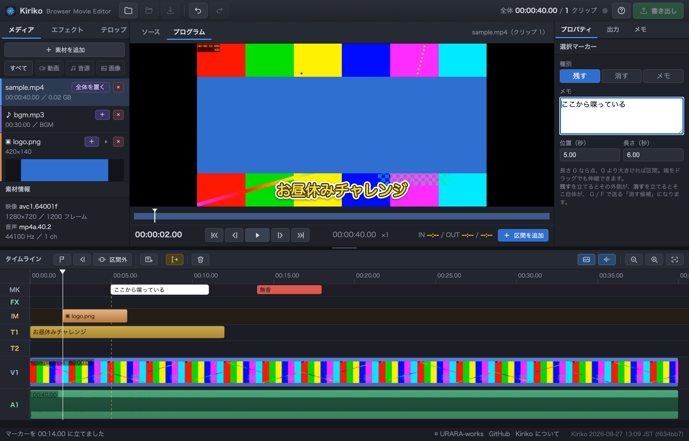
区間マーカーを立てておくと、G（次へ）と F（前へ）で 消す候補が 1 つずつ選ばれて、その場所に移動します。 中身を見て、必要なら範囲を詰めてから Delete。これを繰り返すだけで進みます。
しゃべり出しという種別もあります。長さを持たない点のマーカーで、 生成 AI が書き起こしと一緒に「セリフの始まり」だけを立てる時に使うものです （その手前の無音だけを詰める、という進め方ができます）。人が手で置くことは あまりありませんが、マーカーの種別を選ぶ欄には並んでいます。
生成 AI と繋いで、セリフの書き起こしや無音の検出を任せることもできます （MCP という共通の仕組みを使います）。 詳しくは 紹介ページ をご覧ください。 繋ぎ方は、お使いの生成 AI に 手順書 を示して「この通りに繋いで」と頼むのがいちばん早いです。
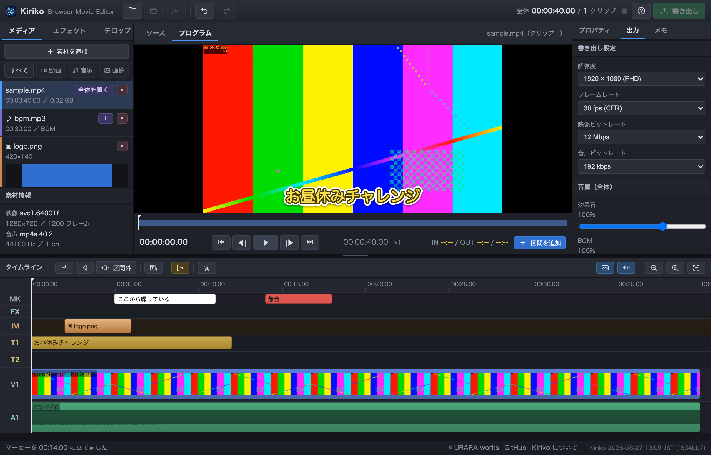
右上の 書き出し を押すと保存先を聞かれ、そのまま mp4 が作られます。 YouTube にそのまま上げられる形式（H.264 + AAC）です。
| 解像度 | 1920×1080 が既定。撮影が 4K でも 1080p で出せば十分きれいです。 途中で変えても、置いてあるテロップ・画像・ぼかしの位置と大きさは自動で合わせ直します |
|---|---|
| フレームレート | 30fps 固定。スマホ撮影のブレを整えて一定にします |
| ビットレート | 12 Mbps が既定。上げるほど高画質でファイルも大きくなります |
目安として、15 分の動画で 2〜3 分ほどで書き出せます。 処理中は進み具合と残り時間のダイアログが出ます（中断 でやめられます）。 終わるまで書き出しボタンは押せません。
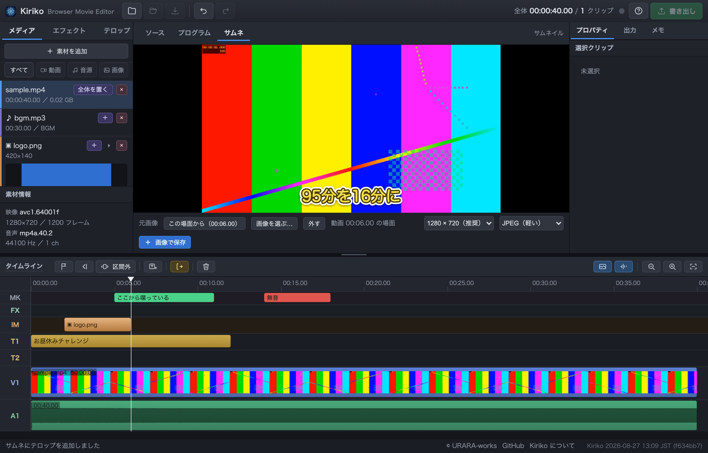
モニターの サムネ タブが、YouTube 用の 1 枚絵を作る場所です。 やることは「元画像を敷いて、テロップを載せる」だけなので、 テロップの機能は動画のときとまったく同じものが使えます （T で追加、ドラッグで位置決め、ライブラリのテロップセットもそのまま）。
下のバーから 2 とおり選べます。
| この場面から | 編集中の動画の 1 コマを、テロップもぼかしも無い素の絵で取り込みます。 先に プログラム タブで使いたい場面まで進めてから、サムネタブに切り替えてください （ボタンにその位置の時刻が出ます） |
|---|---|
| 画像を選ぶ… | 別に用意した画像を敷きます。縦横比が 16:9 でなくても、 画面いっぱいになるよう中央で切り取って敷きます |
元画像は「どこから取るか」だけをプロジェクトに覚えます。
画像そのものは抱えないので、.kiriko ファイルが重くなることはありません。
.kiriko を選ぶと、
そのサムネの文字と画像を取り込めます（解像度が違っても大きさを自動で合わせます）サムネに置いたものは動画には出ません。タイムラインにも並びません。 ⌘Z で戻せるのも同じです。
大きさと形式を選んで 画像で保存。 YouTube の推奨は 1280×720、ファイルの上限は 2MB です。 2MB を超えたときは知らせるので、JPEG にするか小さい方を選び直してください。
1. フォルダを開く のとおり作業フォルダを開いていれば、
保存 でそのフォルダに .kiriko ファイルが書かれます
（保存先は毎回聞かれません）。次からはフォルダを開くだけで、
動画も音も画像もそろった状態で続きから作業できます。
.kiriko があれば、開いた時にそのまま読み込みます（複数あれば選べます）作業フォルダ名の横の × で作業フォルダを閉じることもできます。 閉じると次からは自動で開かなくなります。 素材のフォルダとライブラリフォルダは覚えたままなので、消えません。
プロジェクトファイル単体で開きたい時は、隣の 開く ボタンも使えます （この場合、素材は別に読み込む必要があります）。
プロジェクト名は、決めていなければ作業フォルダの名前が既定になります
（2025.10.01_ウーバーイーツ フォルダで新規に始めれば
2025.10.01_ウーバーイーツ.kiriko）。変えたい時は
名前を付けて保存（保存の隣のボタン、⇧⌘S / Ctrl+Shift+S）で
好きな名前に付け直せます。
ファイルを移動したり名前を変えたりすると見つけられなくなります。 その時は画面上部に案内の帯が出るので、素材を探す か 素材のフォルダを選ぶ を押してください。 素材のフォルダを選んでも、保存先は変わりません。
素材は作業フォルダの外にあっても大丈夫です。 ドラッグ＆ドロップで読み込んだファイルは場所ごと覚えているので、 次に開いた時もそのまま読み直せます。 BGM や効果音を別のフォルダにまとめている場合、わざわざコピーする必要はありません。
ただし開く URL が変わると、覚えているものは全部消えます。 ブラウザはファイルの許可を URL ごとに分けて持っているためです。 公開ページとお手元のサーバー、ポート番号違いは、それぞれ別ものとして扱われます。 いつもと違う URL で開いて素材が見つからない時は、これが原因です （置き場所の問題ではありません）。
プロジェクトファイルに入るのは素材の名前だけです（動画そのものは入りません）。 あとから困らないように、置き場所は決めておくのがおすすめです。
| その回だけの素材 | 撮影した動画など。作業フォルダ（プロジェクトと同じフォルダ）に 置いておくのがいちばん確実です |
|---|---|
| 別フォルダにまとめている場合 | そのままで構いません。読み込んだ時に場所を覚えます。 念のため、案内の帯から 素材のフォルダを選ぶ で一度そのフォルダを 指定しておくと、名前でも探しに行けるようになります |
| 使い回す素材 | テロップ用のロゴや帯、効果音、BGM など。決まったフォルダを 1 つ作って そこに置いておくと、どのプロジェクトからでも同じ場所を選べば済みます。 テロップ用の画像は下のライブラリフォルダに置くのがおすすめです |
左パネルの テロップ タブにある ライブラリフォルダ を決めておいてください。 テロップをライブラリに保存する時、使っている画像がそのフォルダに実ファイルとして置かれます。
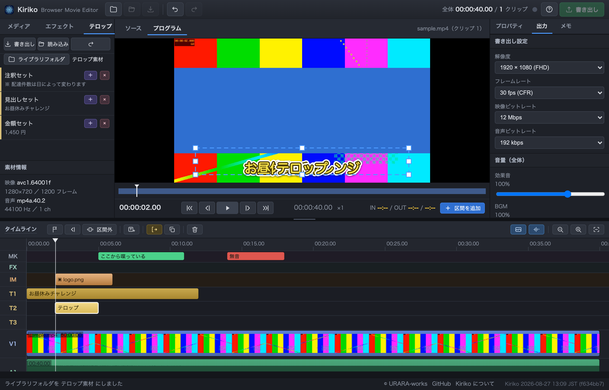
.kirikolib も小さくなります決めていないまま画像入りのテロップを保存しようとすると、確認が出ます。 そのまま保存もできますが、その場合は画像がブラウザの中に取り込まれます。
.kirikolib を別の PC へ持っていく時は、書き出しの時に
「画像も埋め込む」を選んでください（ライブラリフォルダを一緒に持っていくなら不要です）。
ライブラリフォルダを決めずに保存した画像は、ライブラリの中にコピーが入ります。 作業フォルダを開いていれば、ライブラリのテロップを置いた時点で その画像が作業フォルダにもコピーされるので、あとでライブラリを整理しても大丈夫です。
作業フォルダを開かずに使った場合は、ライブラリの中のコピーが頼りになります。 ライブラリからそのセットを削除すると、この保険は無くなるので、 テロップ用の画像は元ファイルも残しておいてください。
Kdenlive で途中まで編集したものがあれば、.kdenlive ファイルを
開く（またはウィンドウにドロップ）するとカットの情報を引き継げます。
こちらも同じ動画をあとから読み込めばつながります。
アプリの中で ? を押すと、いつでもこの一覧を開けます。
| 再生・移動 | |
|---|---|
| Space | 再生／停止 |
| ← → | 1 コマ進む／戻る（Shift で 1 秒） |
| J K L | 逆送り／停止／早送り |
| カット | |
| I / O | 範囲の開始／終了 |
| Delete | 範囲を切り取る（範囲が無い時は選択中のものを削除） |
| Esc | 範囲の選択をやめる |
| Enter | ソースの範囲をクリップとして追加 |
| 切りすぎた所を戻す | |
| < / > | 前／次のカットの継ぎ目へ |
| [ / ] | 継ぎ目の前／後ろを 0.5 秒戻す |
| { / } | 継ぎ目の前／後ろを 0.5 秒削る |
| 重ねるもの | |
| T / B | テロップ／ぼかしを追加 |
| S | 字幕を追加 |
| ←→↑↓ | 選んだ枠を 1px 動かす（再生画面をクリックしたあと） |
| マーカー | |
| M | マーカーを立てる |
| , / . | 前／次のマーカーへ |
| G / F | 次／前の「消す候補」を選ぶ |
| その他 | |
| ⌘Z / Ctrl+Z | 元に戻す |
| ⌘C / Ctrl+C | 選んだテロップ・音源・画像・ぼかしをコピー |
| ⌘V / Ctrl+V | 再生位置に貼り付け |
| ⌘S / Ctrl+S | プロジェクトを保存 |
| ? | ショートカット一覧 |
| 読み込めない | Chrome か Edge をお使いください。Safari・Firefox は書き出しに必要な機能が未対応です |
|---|---|
| プロジェクトを開いたのに映像が出ない | 同じ名前の動画ファイルをもう一度ドロップしてください |
| 動作が重い | タイムライン右上の ▣（サムネイル）と 〜（波形）を切ると軽くなります |
| やり直したい | ⌘Z で何段でも戻せます |